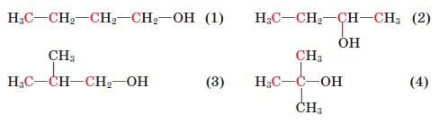

Насичені одноатомні спирти
Склад і будова молекул.
Наявність у молекулі однієї (або декількох) Функціональної гідроксильної групи (її ще називають гідроксигрупою), сполученої з вуглеводневою групою, є ознакою класу органічних речовин, що їх називають спиртами. Насичені одноатомні спирти можна розглядати як сполуки, похідні насичених вуглеводнів (алканів), у яких один атом Гідрогену заміщений гідроксильною групою. Міжнародна назва цих сполук алканоли, іноді застосовують тривіальну назву алкоголі.
Залежно від будови вуглеводневої групи розрізняють спирти насичені, ненасичені, ароматичні, а за кількістю гідроксильних груп - одно- і ба- гатоатомні. Вам відомі насичені одноатомні спирти метанол і етанол, що містять насичену вуглеводневу групу й одну гідроксильну групу, а також триатомний спирт гліцерол. Пригадаймо їхні формули:
Нарешті, наявність або відсутність ненасичених зв’язків (>С=С< або −С≡С−) визначає поділ аліфатичних спиртів на насичені й ненасичені.
Одноатомні насичені спирти (алканоли) позначаються загальною формулою СnH2n+1ОН.
Ненасиченими спиртами називаються такі спирти, у яких гідроксильна ОН-група зв’язана з ненасиченим вуглеводневим радикалом. Їх назва за номенклатурою IUPAC складається з назв вуглеводневої частини із суфіксом -ол, збережено тривіальну назву – аліловий спирт.
Двоатомні насичені спирти або гліколі (алкандіоли) – це спирти з двома гідроксильними групами при різних атомах карбону зі загальною формулою СnН2n(ОН)2.

Між атомами в молекулах спиртів установлюються ковалентні зв'язки. Щоб з'ясувати, як вони утворюються, порівняємо будову молекул метану, води й метанолу. Як видно з мал. 83 і 84, валентні кути в цих молекулах близькі й становлять відповідно 109,5°, 105° i 108°. Можна припустити, що атом Оксигену, так само як і атом Карбону, перебуває у стані sp³-гібридизації. Дві з чотирьох гібридних електронних орбіталей зайнято електронними парами, а дві інші одноелектронні й можуть утворювати б-зв'язки з іншими атомами (мал. 85). Унаслідок відштовхування електронних пар відбувається зменшення тетраедричного валентного кута порівняно з метаном, у молекулі якого всі гібридні орбіталі - одноелектронні.
У молекулі метанолу Оксиген утворює о-зв'язки в результаті перекривання ѕр³-гібридних електронних орбіталей із з електронною орбіталлю атома Гідрогену та ѕр³-гібридною електронною орбіталлю атома Карбону.
Моделі молекул метанолу й етанолу наведено на мал. 86.
Наявність вільних електронних пар у атома Оксигену позначають в електронних формулах спиртів:
Зв'язок О-Н полярний, оскільки атом більш електронегативного Оксигену відтягує до себе електронну густину зв'язку. Унаслідок поляризації на атомі Гідрогену виникає частковий позитивний заряд, а на атомі Оксигену частковий негативний:

Полярність спиртів позначається на їхніх фізичних і хімічних властивостях.
Метанол найпростіший з насичених одноатомних спиртів. Константи його гомологів наведено в таблиці.
| Назва спирту | Формула | Температура, ∘С | Густина, г/см3 | Розчинність, г/100г Н2О | ||
|---|---|---|---|---|---|---|
| молекулярна | скорочена структурна | плавлення | кипіння | |||
| Метанол | CH3OH | CH3−OH | -94 | 64,5 | 0,792 | Необмежена |
| Етанол | C2H5OH | CH3−CH2−OH | -114 | 78,4 | 0,789 | ◊ |
| Пропан-1-ол | C3H7OH | CH3−CH2−CH2−OH | -127 | 97,4 | 0,804 | ◊ |
| Бутан-1-ол | C4H9OH | CH3−(CH2)2−CH2−OH | -90,2 | 177,4 | 0,810 | 7,9 |
| Пентан-1-ол | C5H11OH | CH3−(CH2)3−CH2−OH | -78,5 | 137,8 | 0,814 | 2,4 |
| Гексан-1-ол | C6H13OH | CH3−(CH2)4−CH2−OH | -52 | 157 | 0,821 | 0,6 |
| Гептан-1-ол | C7H15OH | CH3−(CH2)5−CH2−OH | -34 | 176 | 0,822 | 0,1 |
| Октан-1-ол | C8H17OH | CH3−(CH2)6−CH2−OH | -17 | 194 | 0,825 | 0,05 |
| Нонан-1-ол | C9H19OH | CH3−(CH2)7−CH2−OH | -5 | 215 | 0,827 | Нерозчинний |
| Декан-1-ол | C10H21OH | CH3−(CH2)8−CH2−OH | 7 | 230 | 0,829 | ◊ |
Загальну формулу насичених одноатомних спиртів можна вивести із загальної формули насичених вуглеводнів заміщенням атома Гідрогену на гідроксильну групу:
nH2n+2 CnH2n+1OH
Якщо вуглеводневу групу позначити літерою R, то загальна формула спиртів матиме вигляд R−ОН.
Ізомерія. Номенклатура.
Насиченим одноатомним спиртам властива структурна ізомерія, зумовлена будовою карбонового скелета й положенням гідроксильної групи. Для спирту складу С4Н9ОН можливі такі ізомери:
За систематичною номенклатурою назви насичених одноатомних спиртів (алканолів) нерозгалуженої будови утворюють від назв алканів додаванням до назв суфікса -ол (метан метанол, пропан пропанол). Щоб назвати спирт розгалуженої будови, треба пронумерувати найдовший карбоновий ланцюг, починаючи від атома Карбону, найближчого до гідроксильної групи; перед назвою вказати місця і назви алкільних замісників у абетковому по- рядку; після назви головного ланцюга цифрою вказати місце гідроксильної групи й додати суфікс - ол.
Наприклад:
Фізичні властивості. Водневий зв'язок.
Загальні зміни фізичних властивостей (густина, температура кипіння та топлення тощо), характерних для вуглеводнів, проявляються і в спиртах. Але їх температури кипіння сутєво вищі, ніж алканів і галогеналканів з тією самою кількістю атомів карбону. Це пояснюється наявністю водневих зв’язків, які сприяють утворенню асоціатів між молекулами спирту
Насичені одноатомні спирти рідкі або кристалічні (вищі спирти) речовини, безбарвні, зі специфічним запахом. Наприклад, метанол, етанол і пропанол мають спиртовий запах, бутаноли й пентаноли сивушний.
Серед спиртів, на відміну від вуглеводнів, немає газуватих речовин. Температури плавлення і кипіння спиртів значно вищі, ніж вуглеводнів із близькою відносною молекулярною масою.
| Формула вуглеводню | tкипіння, ∘С | Формула спирту | tкипіння, ∘С |
|---|---|---|---|
| C2H6 | -89 | CH3OH | 64,5 |
| C3H8 | -42 | C2H5OH | 78,4 |
| C4H10 | -0,5 | C3H7OH | 97,4 |
| C5H12 | 36 | C3H7OH | 117,4 |
| C6H14 | 69 | C5H11OH | 137,4 |
Таку відмінність констант можна пояснити наявністю додаткової взаємодії між молекулами спирту. Щоб з'ясувати природу цієї взаємодії, звернемося до неорганічної хімії та розглянемо температури кипіння сполук Гідрогену з деякими елементами IV-VII груп Періодичної системи. Зверніть увагу, що зі збільшенням відносної молекулярної маси цих сполук їхні температури кипіння підвищуються. Виняток становлять гідроген флуорид, вода й амоніак, константи яких дуже різняться значеннями з константами сполук сусідніх елементів у підгрупі. Маючи найнижчі відносні молекулярні маси, вони мають найвищі температури кипіння. З якої причини молекули цих сполук міцніше зв'язані між собою?
Зв'язки між атомами Гідрогену й електронегативними атомами N, O, F полярні, на атомах Гідрогену виникає частковий позитивний заряд:
За рахунок притягання позитивно зарядженого атома Гідрогену однієї молекули й негативно зарядженого атома Оксигену, Нітрогену чи Флуору іншої молекули утворюється так званий водневий зв'язок (позначають трьома крапками). Гідроген є ніби містком між двома електронегативними атомами:
Так само утворюються водневі зв’язки між полярними молекулами спирту:
Водневий зв'язок належить до слабких зв'язків, його енергія становить близько 20 кДж/моль (порівняйте з енергією ковалентних зв'язків). Однак для того, щоб рідина, у якій молекули асоційовані за рахунок водневих зв'язків, перетворилася на пару (закипіла), потрібно затратити додаткову енергію на руйнування цих зв'язків.
Отже, порівняно високі температури кипіння спиртів (а також води, амоніаку, гідроген флуориду) пояснюють наявністю водневих зв'язків між їхніми молекулами.
Унаслідок утворення водневих зв'язків між молекулами води й спиртів останні розчиняються у воді:
Проте це характерно лише для нижчих спиртів, у яких гідроксильна група становить значну частину молекули. Перші три члени гомологічного ряду необмежено розчинні; у наступних гомологів зі зростанням довжини карбонового ланцюга його частка в молекулі збільшується, тому розчинність спиртів зменшується.
У цьому можна переконатися на досліді. У чотири пробірки з водою добавимо метанол, етанол, бутанол, пентанол в однакових об'ємах. Спостерігається повне розчинення перших двох спиртів і значно менша розчинність двох інших.
Хімічні властивості.
Рівняння реакцій спиртів наведено нижче. Як і всі органічні речовини, спирти горять із виділенням теплоти. Підпалимо зразки метанолу, етанолу, пропанолу, пентанолу в порцелянових чашках. Помітна відмінність у характері горіння спиртів: від майже несвітного синюватого полум'я метанолу до кіптявого пентанолу.
Частково окиснюють спирти калій дихромат або калій перманганат у кислотному середовищі, при цьому утворюються альдегіди й карбонові кислоти.
Наявність у молекулах спиртів функціональної (характеристичної) гідроксильної групи зумовлює характерні хімічні властивості (хімічні функції) цих сполук.
Оскільки електронна густина зв'язку О←Н зміщена до Оксигену, можна припустити, що для спиртів можливі реакції з відщепленням Гідрогену. Проте проба спирту на електропровідність дає негативний результат; май- же не спостерігається й електролітична дисоціація спирту у воді. Отже, Гідроген хоча й набуває рухливості, але хімічний зв'язок О−Н за таких умов не розривається.
Спробуємо провести реакцію з активнішими реагентами. У пробірку з 2 мл етанолу вмістимо шматочок металічного натрію і закриємо її пробкою зі скляною трубкою, відтягнутою на кінці. Відбувається реакція заміщення з виділенням водню.
2 CH3−CH2−OH + 2 Na → 2 CH3−CH2−ONa + H2↑
У цій реакції виявляються слабкі кислотні властивості спирту. Зв'язок О−Н розривається за йонним механізмом:
Загальна назва аніонів у продуктах заміщення Гідрогену на металічний елемент алканоляти (алкоголяти). Добутий нами натрій етанолят можна виділити у твердому вигляді.
Пригадайте, що реакція натрію з водою відбувається бурхливо, водень виділяється значно енергійніше, ніж у реакції натрію з етанолом. Очевидно, позначається вплив карбонового ланцюга: Гідроген стає менш рухливим і відщеплюється важче порівняно з Гідрогеном води.
Зі зростанням довжини карбонового ланцюга активність спиртів у реакції з натрієм знижується. У цьому можна переконатися на досліді. У три пробірки наллємо по 2 мл метанолу, етанолу й бутан-1-олу. У кожну вмістимо однакові шматочки натрію. Реакції відбуваються з різними швидкостями, причому тим повільніше, чим довший карбоновий ланцюг у молекулі спирту.
Спирти вступають також у реакції з відщепленням гідроксильної групи, до яких належить реакція з гідроген бромідом. Зберемо прилад, зображений на малюнку (віртуально). Умістимо в колбу суміш етанолу, натрій броміду й сульфатної кислоти, нагріємо її. Через деякий час помітимо, що під шаром льоду в колбі-приймачі збирається густа рідина - бромоетан. Відбуваються реакції:
NaBr + H2SO4 → NaHSO4 + HBr
У цій реакції виявляються слабкі основні властивості спиртів завдяки взаємодії протона кислоти з вільною електронною парою атома Оксигену.
Спирти вступають у реакцію дегідратації. Перебіг цієї реакції визначається зовнішніми умовами. Якщо етанол нагрівати до температури понад 170 °С із сильною кислотою, наприклад концентрованою сульфатною, або пропускати пару спирту над каталізатором (А12O3), то відбувається реакція внутрішньомолекулярної дегідратації з утворенням етену:

Якщо ж температура нагрівання не перевищує 140 °С і спирт узято в надлишку, то відбувається міжмолекулярна дегідратація з утворенням сполуки, що належить до класу етерів загальної формули R1−О−R2 (тривіальна назва прості ефіри).
Із етанолу утворюється етоксіетан (тривіальна назва
Із середини ХІХ ст. діетиловий ефір відомий як засіб для знеболення. Першу операцію під ефірним наркозом провів бостонський хірург Дж. Уоррен у 1846 р. У воєнно-польовій хірургії його вперше застосував видатний хірург М. І. Пирогов.
Порівнюючи склад метоксиметану CH3-O-CH3 й етанолу С2Н5ОН, можна помітити, що вони мають однакову брутто-формулу: С2Н6О. Ці сполуки ізомери. Отже, існує ще один вид структурної ізомерії - між класами органічних сполук.
Відщеплення води від молекули спирту розгалуженої будови відбувається переважно в такий спосіб, що атом Гідрогену відщеплюється від найменш гідрогенізованого атома Карбону:

Цю особливість поведінки спиртів виявив у 1875 р. російський учений О. М. Зайцев (правило Зайцева).